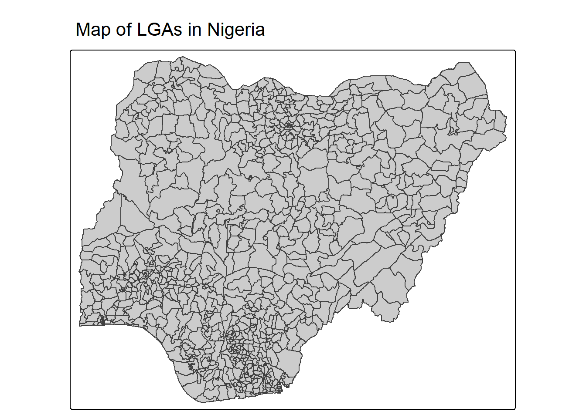
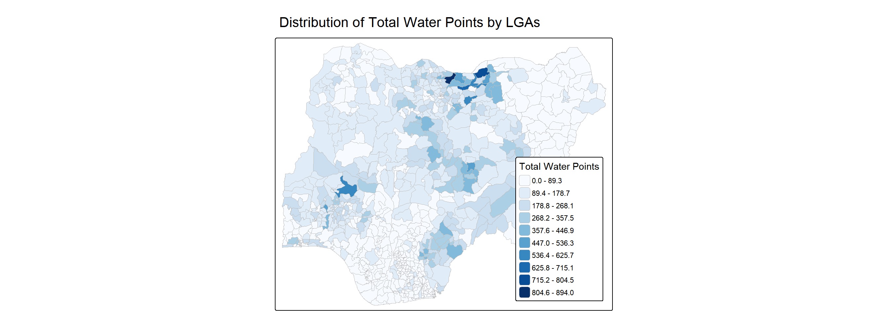
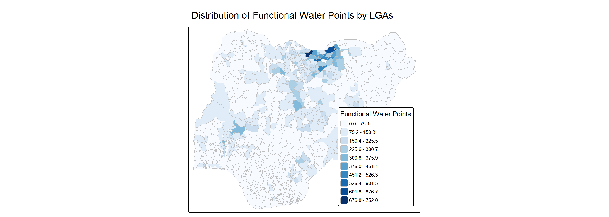
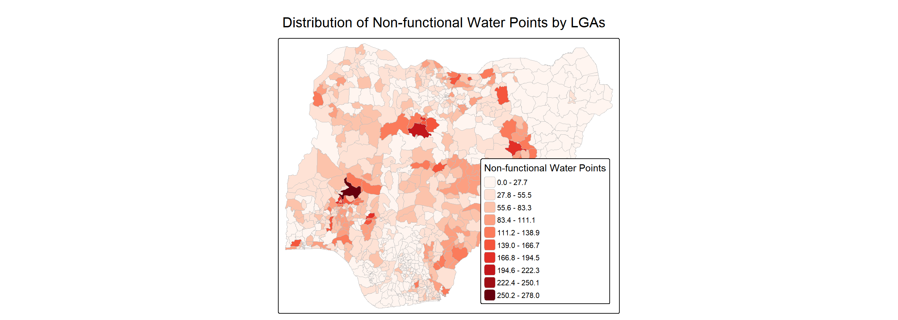
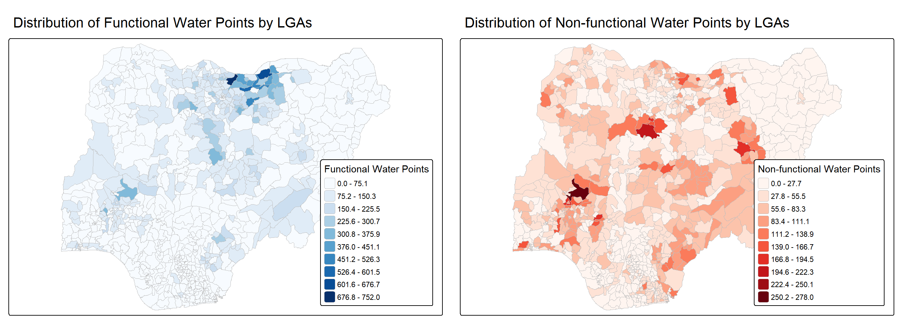
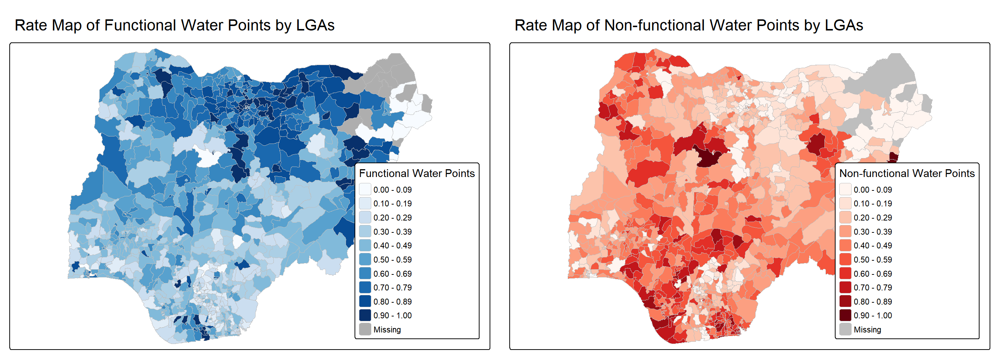
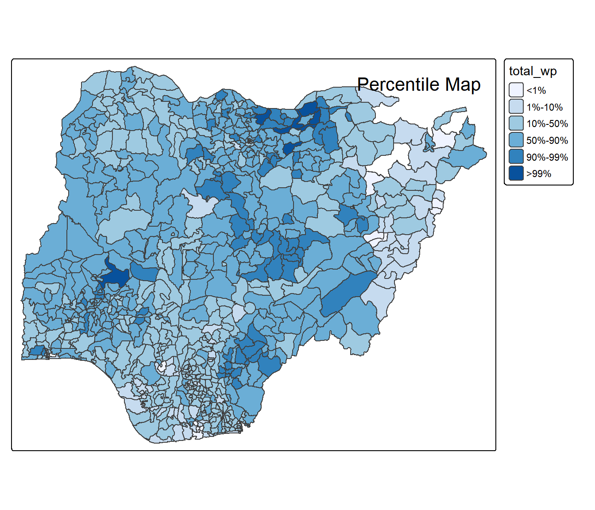
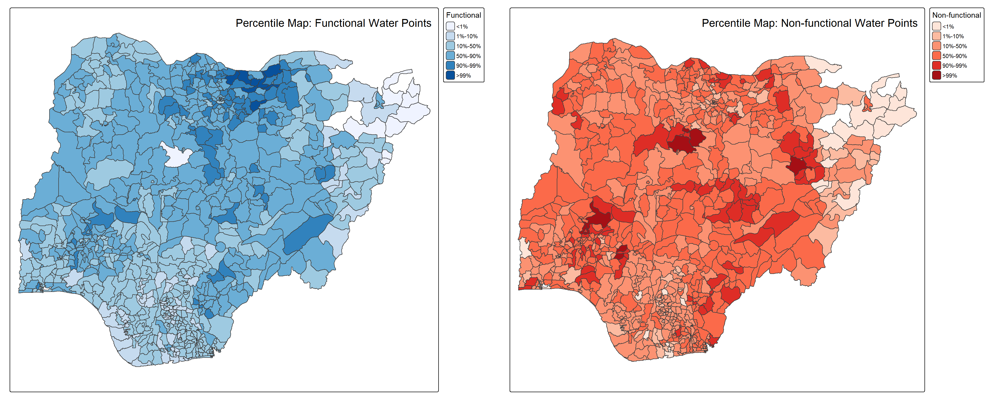
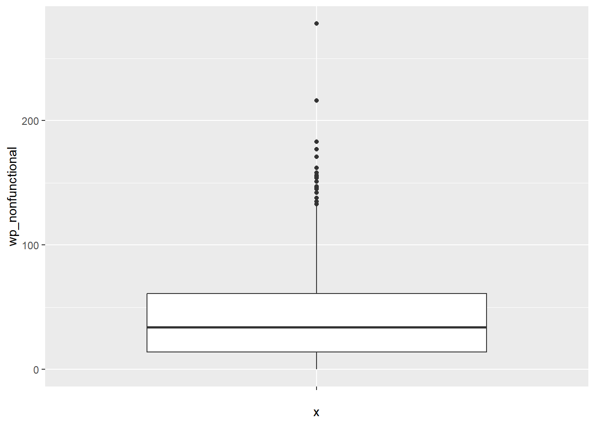
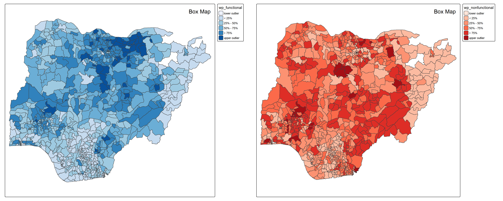

pacman::p_load(sf,tmap,tidyverse)08-3 Analytical Mapping
1 Overview
In this in class exercise, we gain practical experience using appropriate R techniques to create analytical maps.
1.1 Learning Outcomes
By the end of this exercise, we learn how to apply functions from the tmap and tidyverse packages to complete the following tasks:
- Import geospatial datasets stored in RDS format into the R environment.
- Create cartographic quality choropleth maps using suitable functions from the tmap package.
- Produce rate map to visualise values relative to a population or area.
- Generate percentile map to compare the relative distribution of values across regions.
- Construct boxmap to highlight spatial outliers and variations in the dataset.
2 Getting Started
2.1 Installing and Loading Packages
There are 3 packages that will be used in this exercise.
| Package | Description |
|---|---|
| tidyverse | A collection of R packages for data importing, cleaning, transformation, and visualisation (e.g., readr, dplyr, tidyr, ggplot2). |
| tmap | Creates cartographic quality static and interactive thematic (choropleth) maps. |
| sf | Handles importing, managing, and processing vector-based geospatial data |
2.2 Importing the Data
The dataset used in this hands on exercise is NGA_wp.rds, provided in RDS format.
we use read_rds() to import the rds file as an sf object and name it NGA_wp. The list() function displays the first 10 records of the file. The file contains 774 multipolygon features, 8 fields and Project CRS is “Minna/Nigeria Mid Belt”.
NGA_wp<- read_rds("data/rds/NGA_wp.rds")
list(NGA_wp)[[1]]
Simple feature collection with 774 features and 8 fields
Geometry type: MULTIPOLYGON
Dimension: XY
Bounding box: xmin: 26662.71 ymin: 30523.38 xmax: 1344157 ymax: 1096029
Projected CRS: Minna / Nigeria Mid Belt
First 10 features:
ADM2_EN ADM2_PCODE ADM1_EN ADM1_PCODE
1 Aba North NG001001 Abia NG001
2 Aba South NG001002 Abia NG001
3 Abadam NG008001 Borno NG008
4 Abaji NG015001 Federal Capital Territory NG015
5 Abak NG003001 Akwa Ibom NG003
6 Abakaliki NG011001 Ebonyi NG011
7 Abeokuta North NG028001 Ogun NG028
8 Abeokuta South NG028002 Ogun NG028
9 Abi NG009001 Cross River NG009
10 Aboh-Mbaise NG017001 Imo NG017
geometry total_wp wp_functional wp_nonfunctional
1 MULTIPOLYGON (((548795.5 11... 17 7 9
2 MULTIPOLYGON (((547286.1 11... 71 29 35
3 MULTIPOLYGON (((1248985 104... 0 0 0
4 MULTIPOLYGON (((510864.9 57... 57 23 34
5 MULTIPOLYGON (((594269 1209... 48 23 25
6 MULTIPOLYGON (((660767 2522... 233 82 42
7 MULTIPOLYGON (((78621.56 37... 34 16 15
8 MULTIPOLYGON (((106627.7 35... 119 72 33
9 MULTIPOLYGON (((632244.2 21... 152 79 62
10 MULTIPOLYGON (((540081.3 15... 66 18 26
wp_unknown
1 1
2 7
3 0
4 0
5 0
6 109
7 3
8 14
9 11
10 223 Basic Choropleth Mapping
The code chunk below generates a basic map of the study area, Nigeria.
tm_shape(NGA_wp) +
tm_polygons(
fill = "grey80") +
tm_title("Map of LGAs in Nigeria")
The code below creates a choropleth map for total water points by using functions from tmap package and set classification style as “equal”.
tm_shape(NGA_wp) +
tm_polygons(
fill = "total_wp",
fill.scale = tm_scale_intervals(
style = "equal",
n = 10,
values = "brewer.blues"
),
fill.legend = tm_legend(
title = "Total Water Points",
position = tm_pos_in("right", "bottom")
),
col = "grey",
lwd = 0.1
) +
tm_title("Distribution of Total Water Points by LGAs")
3.1 Visualising Distribution of Non-functional Water Points
The code below creates two maps for function and non-function water points in the study area.
p1 <- tm_shape(NGA_wp) +
tm_polygons(
fill = "wp_functional",
fill.scale = tm_scale_intervals(
style = "equal",
n = 10,
values = "brewer.blues"
),
fill.legend = tm_legend(
title = "Functional Water Points",
position = tm_pos_in("right", "bottom")
),
col = "grey",
lwd = 0.1
) +
tm_title("Distribution of Functional Water Points by LGAs")
p1
p2 <- tm_shape(NGA_wp) +
tm_polygons(
fill = "wp_nonfunctional",
fill.scale = tm_scale_intervals(
style = "equal",
n = 10,
values = "brewer.reds"
),
fill.legend = tm_legend(
title = "Non-functional Water Points",
position = tm_pos_in("right", "bottom")
),
col = "grey",
lwd = 0.1
) +
tm_title("Distribution of Non-functional Water Points by LGAs")
p2
Next we arrange them side by side.
tmap_arrange(p1,p2, nrow = 1)
The maps show that functional water points are generally concentrated in the northern part of the study area, whereas non functional water points appear more frequently in the central regions. However, the scales of the two maps differ significantly. Functional water points reach a maximum value of 752, while non functional water points only total 278. As a result, comparisons based on absolute values may lead to misleading interpretations.
4 Choropleth Map for Rates
Previous readings have emphasised the importance of mapping rates instead of raw counts. This is because water points are unevenly distributed across space. Without adjusting for the number of water points in each location, the map would simply reflect the overall concentration of water points, rather than revealing meaningful spatial patterns related to the phenomenon being studied.
4.1 Deriving Proportion of Functional Water Points and Non-Functional Water Points
The code below uses the mutate() function from the dplyr package to create two new variables representing the percentage of functional and non functional water points relative to the total number of water points.
NGA_wp <- NGA_wp %>%
mutate(pct_functional = wp_functional/total_wp) %>%
mutate(pct_nonfunctional = wp_nonfunctional/total_wp)list(NGA_wp)[[1]]
Simple feature collection with 774 features and 10 fields
Geometry type: MULTIPOLYGON
Dimension: XY
Bounding box: xmin: 26662.71 ymin: 30523.38 xmax: 1344157 ymax: 1096029
Projected CRS: Minna / Nigeria Mid Belt
First 10 features:
ADM2_EN ADM2_PCODE ADM1_EN ADM1_PCODE
1 Aba North NG001001 Abia NG001
2 Aba South NG001002 Abia NG001
3 Abadam NG008001 Borno NG008
4 Abaji NG015001 Federal Capital Territory NG015
5 Abak NG003001 Akwa Ibom NG003
6 Abakaliki NG011001 Ebonyi NG011
7 Abeokuta North NG028001 Ogun NG028
8 Abeokuta South NG028002 Ogun NG028
9 Abi NG009001 Cross River NG009
10 Aboh-Mbaise NG017001 Imo NG017
geometry total_wp wp_functional wp_nonfunctional
1 MULTIPOLYGON (((548795.5 11... 17 7 9
2 MULTIPOLYGON (((547286.1 11... 71 29 35
3 MULTIPOLYGON (((1248985 104... 0 0 0
4 MULTIPOLYGON (((510864.9 57... 57 23 34
5 MULTIPOLYGON (((594269 1209... 48 23 25
6 MULTIPOLYGON (((660767 2522... 233 82 42
7 MULTIPOLYGON (((78621.56 37... 34 16 15
8 MULTIPOLYGON (((106627.7 35... 119 72 33
9 MULTIPOLYGON (((632244.2 21... 152 79 62
10 MULTIPOLYGON (((540081.3 15... 66 18 26
wp_unknown pct_functional pct_nonfunctional
1 1 0.4117647 0.5294118
2 7 0.4084507 0.4929577
3 0 NaN NaN
4 0 0.4035088 0.5964912
5 0 0.4791667 0.5208333
6 109 0.3519313 0.1802575
7 3 0.4705882 0.4411765
8 14 0.6050420 0.2773109
9 11 0.5197368 0.4078947
10 22 0.2727273 0.39393944.2 Plotting Map of Rate
p3 <- tm_shape(NGA_wp) +
tm_polygons(
fill = "pct_functional",
fill.scale = tm_scale_intervals(
style = "equal",
n = 10,
values = "brewer.blues"
),
fill.legend = tm_legend(
title = "Functional Water Points",
position = tm_pos_in("right", "bottom")
),
col = "grey",
lwd = 0.1
) +
tm_title("Rate Map of Functional Water Points by LGAs")p4 <- tm_shape(NGA_wp) +
tm_polygons(
fill = "pct_nonfunctional",
fill.scale = tm_scale_intervals(
style = "equal",
n = 10,
values = "brewer.reds"
),
fill.legend = tm_legend(
title = "Non-functional Water Points",
position = tm_pos_in("right", "bottom")
),
col = "grey",
lwd = 0.1
) +
tm_title("Rate Map of Non-functional Water Points by LGAs")tmap_arrange(p3, p4, nrow = 1)
The map shows that functional water points are more common in certain areas, while non functional ones are relatively fewer. Overall, the northern regions appear to have a higher concentration of water points. However, the top right corner of the map appears in grey, which may indicate either uninhabited areas or missing data during the data collection process.
5 Extreme Value Maps
Extreme value maps are a variation of traditional choropleth maps in which the classification scheme is designed to highlight extreme values at both the lower and upper ends of the scale. The main goal is to identify potential outliers in the data. These maps were developed in the context of spatial exploratory data analysis (EDA), which extends common non spatial EDA techniques by incorporating spatial information (Anselin, 1994).
5.1 Percentile Map
A percentile map is a special type of quantile map that uses six specific categories: 0–1%, 1–10%, 10–50%, 50–90%, 90–99%, and 99–100%. The corresponding breakpoints can be calculated using the base R quantile() function, by specifying a vector of cumulative probabilities such as c(0, 0.01, 0.1, 0.5, 0.9, 0.99, 1). It is important to include both the starting point (0) and the ending point (1) to ensure that the full range of values is represented.
5.1.1 Data Preparation
Step 1: Exclude records with NA by using the code chunk below.
NGA_wp <- NGA_wp %>%
drop_na()Step 2: Creating customised classification and extracting values
0% 1% 10% 50% 90% 99% 100%
0.0000000 0.0000000 0.2169811 0.4791667 0.8611111 1.0000000 1.0000000
Important
When variables are extracted from an sf data frame, the geometry column is included automatically. While this is useful for spatial analysis, many base R functions cannot handle geometry. For example, quantile() will produce an error. Therefore, st_set_geometry(NULL) is used to remove the geometry column.
5.1.2 Why writing functions?
Writing a function has several advantages compared to copy and paste. First, a function can be given a clear name that improves code readability. Second, when requirements change, the code only needs to be updated in one place. Third, it reduces the risk of mistakes that may occur when copying and modifying code repeatedly.
Source: Chapter 19, Functions, R for Data Science.
5.1.3 Creating the get.var function
First, we create an R function to extract a variable (e.g., wp_nonfunctional) as a vector from an sf data frame.
Arguments:
vname: the variable name (as a character string, in quotes)df: the name of the sf data frame
Returns:
-v: a vector containing the values (without a column name).
5.1.4 A percentile mapping function
Next, we will write a percentile mapping function by using the code chunk below.
percentmap <- function(vnam, df, legtitle=NA, mtitle="Percentile Map",
palette = "brewer.blues"){
percent <- c(0, .01, .1, .5, .9, .99, 1)
var <- get.var(vnam, df)
var <- as.vector(unlist(var))
bperc <- quantile(var, percent, na.rm = TRUE)
bperc <- bperc + seq_along(bperc) * 1e-10
tm_shape(df) +
tm_polygons() +
tm_shape(df) +
tm_polygons(
fill = vnam,
fill.scale = tm_scale_intervals(
breaks = bperc,
values = palette
),
fill.legend = tm_legend(
title = legtitle,
labels = c("<1%", "1%-10%", "10%-50%", "50%-90%", "90%-99%", ">99%")
)
) +
tm_borders() +
tm_title(mtitle) +
tm_layout(title.position = c("right", "top"))
}5.1.5 Test drive the percentile mapping function
percentmap("total_wp", NGA_wp)
p5 <- percentmap("wp_functional", NGA_wp,
legtitle = "Functional",
mtitle = "Percentile Map: Functional Water Points",
palette = "brewer.blues")
p6 <- percentmap("wp_nonfunctional", NGA_wp,
legtitle = "Non-functional",
mtitle = "Percentile Map: Non-functional Water Points",
palette = "brewer.reds")
tmap_arrange(p5, p6, nrow = 1)
5.2 Box Map
A box map is an enhanced version of a quartile map that includes additional categories to highlight lower and upper outliers. When lower outliers exist, the first break is set at the minimum value and the second break at the lower fence. If there are no lower outliers, the first break begins at the lower fence followed by the minimum value, since no observations fall between these two values.
ggplot(data = NGA_wp,
aes(x = "",
y = wp_nonfunctional)) +
geom_boxplot()
5.2.1 Creating the boxbreaks Function
The code chunk below defines an R function that generates breakpoints for constructing a box map.
Arguments:
-
v:a vector containing the observations
-mult: multiplier for the IQR (default value is 1.5)
Returns:
-bb: a vector of seven breakpoints based on the quartiles and fences.
boxbreaks <- function(v,mult=1.5) {
qv <- unname(quantile(v))
iqr <- qv[4] - qv[2]
upfence <- qv[4] + mult * iqr
lofence <- qv[2] - mult * iqr
# initialize break points vector
bb <- vector(mode="numeric",length=7)
# logic for lower and upper fences
if (lofence < qv[1]) { # no lower outliers
bb[1] <- lofence
bb[2] <- floor(qv[1])
} else {
bb[2] <- lofence
bb[1] <- qv[1]
}
if (upfence > qv[5]) { # no upper outliers
bb[7] <- upfence
bb[6] <- ceiling(qv[5])
} else {
bb[6] <- upfence
bb[7] <- qv[5]
}
bb[3:5] <- qv[2:4]
return(bb)
}5.2.2 Creating the get.var function
Here we should create a same R function to extract a variable as a vector.
Arguments:
vname: the variable name (as a character string, in quotes)df: the name of the sf data frame
Returns:
-v: a vector containing the values (without a column name).
5.2.3 Test drive the newly created function
var <- get.var("wp_nonfunctional", NGA_wp)
boxbreaks(var)[1] -56.5 0.0 14.0 34.0 61.0 131.5 278.05.2.4 Boxmap function
boxmap <- function(vnam, df,
legtitle=NA,
mtitle="Box Map",
mult=1.5,
palette = "brewer.blues"){
var <- get.var(vnam,df)
bb <- boxbreaks(var)
tm_shape(df) +
tm_polygons() +
tm_shape(df) +
tm_polygons(
fill = vnam,
fill.scale = tm_scale_intervals(
breaks=bb,
values=palette
),
fill.legend = tm_legend(
title = legtitle,
labels = c("lower outlier",
"< 25%",
"25% - 50%",
"50% - 75%",
"> 75%",
"upper outlier")))+
tm_borders() +
tm_title(mtitle) +
tm_layout(title.position = c("right", "top"))
}p7 <- boxmap("wp_functional", NGA_wp)
p8 <- boxmap("wp_nonfunctional", NGA_wp, palette = "brewer.reds")
tmap_arrange(p7, p8, nrow = 1)
The box maps illustrate the enhanced spatial distribution of functional and non functional water points across Nigeria. Functional water points appear to be more concentrated in the northern regions, while non functional water points show higher concentrations in several central and southern areas. The box map classification helps identify outlier regions with unusually high or low values,that helps us to form a clearer understanding of spatial variation.
6 Reference
Kam, Tin Seong (2026). 23 Analytical Mapping, https://r4va.netlify.app/chap23